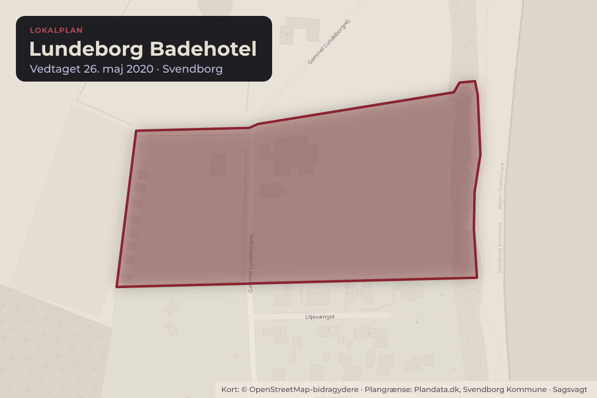
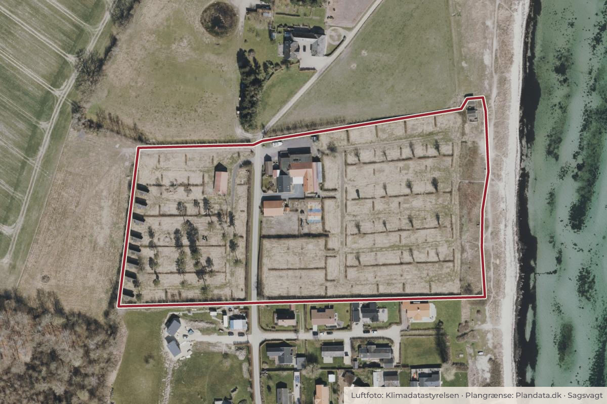

Besluttet 24. juni, Plan- og Lokalsamfundsudvalget, Svendborg
Dispensationer fra lokalplan til Lundeborg Badehotel
Direktionen indstiller til Plan- og Lokalsamfundsudvalget, at: Der meddeles afslag på dispensation til tagmateriale af betontagsten Der meddeles afslag på dispensation til taghældning på 30 grader Der meddeles dispensation til terrænreguleringer i byggefelt 3 Der meddeles dispensation til en …

Kort: © OpenStreetMap-bidragydere. Plangrænse: Plandata.dk, Svendborg Kommune.

Kort fortalt
- Hvem
- Plan- og Lokalsamfundsudvalget, Svendborg Kommune
- Hvornår
- Onsdag 24. juni 2026
- Status
- Besluttet. Administrationen orienterede indledningsvist om, at der var tilgået 4 dokumenter til sagen, som vedlægges referatet, herunder at bygherre tilbyder tinglysning der vanskeliggør ejerlejlighedsopdeling. Bilag 9. Bemærkninger fra bygherres advokat Bilag 10. Notat om henvendelse fra ansøger – Codex Advokaterne 18/6-26 Bilag 11. Høringssvar vedr. lokalplan Lundeborg - Arkitekturrådet Bilag 12. Høringssvar vedr. lokalplan Lundeborg – By og Land Udvalget tog orienteringen til efterretning.Beslutningen er forkortet her. Læs hele beslutningen
Vedtaget 4–2
- For 4
- Imod 2
- Undlod 0
For
- Arne Ebsen (F)
- John Arly Henriksen (A)
- Hanne Klit (A)
- Claus
Imod
- Per Nykjær Jensen (I)
- Johan Weltzin Kristensen (Ø)
Læs hele sagen Kommunens egen tekst
Indstilling
Direktionen indstiller til Plan- og Lokalsamfundsudvalget, at:
Der meddeles afslag på dispensation til tagmateriale af betontagsten
Der meddeles afslag på dispensation til taghældning på 30 grader
Der meddeles dispensation til terrænreguleringer i byggefelt 3
Der meddeles dispensation til en befæstelsesgrad på 44,7 %
Der meddeles afslag eller dispensation til etablering af tre ekstra interne veje
Der meddeles afslag eller dispensation til at ferielejligheder skal sammenbygges i
rækker af mindst 3
Der meddeles afslag eller dispensation til at fælles faciliteter opføres som en del af
bygninger større end 350 m2
Orienteringen om den juridiske vurdering af forhold vedrørende udstykning og
opdeling i ejerlejligheder tages til efterretning
Sagsfremstilling
Sagen handler om et område i det nordlige Lundeborg, se bilag 1 (Bilag 1. Oversigtsfoto).
Området er omfattet af Lokalplan nr. 641 ”Lundeborg Badehotel”, se bilag 2 (Bilag 2. Lokalplan
Baggrunden for lokalplanen er jfr. side 10 i lokalplanen, at Lundeborg i kommuneplanen 20172029 blev udpeget som et fremtidigt primært lokaliseringssted for større ferie- og fritidsanlæg
for de kystnære områder ved Storebæltskysten.
Lokalplanen skulle realisere Lundeborgs udpegning som turistcenter, og styrke helårsturismen
i Svendborg Kommune, og særligt omkring Lundeborg.
Lokalplanen blev udarbejdet på baggrund af et konkret projekt, som dog ikke blev realiseret.
Der er nu søgt om byggetilladelse til opførelse af 6 hoteller, se bilag 3 (Bilag 3. Samlet
tegningsmateriale). Hvert hotel er sammenbygget med en mellembygning bestående af en
separat fællesfacilitet i form af spiselokale, køkken, toilet og reception. Hotellerne kan samlet
rumme 312 gæster samtidigt.
Hvert hotel består af et antal soveværelser, som har adgang til fælles bad/toiletter, samt
køkken, stue, aktivitetsrum og poolrum.
Lokalplanen blev oprindeligt lavet ud fra et projekt, hvor fællesfaciliteter (reception, brasserie,
beachbar og konferencefaciliteter) lå samlet et enkelt sted i nogle større bygninger, med nogle
mindre ferielejligheder andre steder på grunden. Der er dog ikke i lokalplanen krav om at alle
fællesfaciliteter skal samles et enkelt sted.
Det ansøgte byggeri forudsætter dispensation fra flere bestemmelser i lokalplan 641. Der er
tale om følgende dispensationer:
1. Tagmateriale
Det ansøgte: Der søges om dispensation til at anvende betontagsten i stedet for tagpap,
skifer, eternitplader eller grønne tage, jf. § 8.9.
Ansøgers begrundelse: Ansøger begrunder ønsket med hensyn til bebyggelsens
arkitektoniske fremtoning samt at betontagsten vurderes at være mindre CO2belastende end f.eks. tagpap og skifer.
Administrationen anbefaler: at der meddeles afslag på dispensation til tagmateriale af
betontagsten, for at fastholde lokalplanens krav til arkitektur, som vurderes at passe
bedre ind i lokalområdet.
2. Taghældning
Det ansøgte: Der søges om dispensation til at udføre tage med en hældning på 30
grader i stedet for 45 grader, jf. § 8.3.
Ansøgers begrundelse: Ansøger oplyser, at en lavere taghældning kan medføre lavere
bygningshøjder. Det bemærkes at tage over fælles faciliteter ifølge lokalplanen må have
en hældning på 20 grader.
Administrationen anbefaler: at der meddeles afslag på dispensation til taghældning på
30 grader, for at fastholde lokalplanens krav til arkitektur, som vurderes at passe bedre
ind i lokalområdet.
3. Terrænregulering
Det ansøgte: Der søges om dispensation til terrænreguleringer på mere end 0,5 m i
byggefelt 3 (nordøstlige del), jf. § 10.6.
Ansøgers begrundelse: Ansøger oplyser, at byggeriet er forsøgt tilpasset eksisterende
terræn, men at en terrænforskel på ca. 2 meter nødvendiggør reguleringer, hvor
terrænet sænkes med op til ca. 1 m og hæves med op til ca. 0,9 m.
Administrationen anbefaler: at der meddeles dispensation til terrænreguleringen, da der
både sker sænkning og hævning af terrænet, og der derfor ikke kun sker en hævning af
bygningshøjden, som i øvrigt holder sig under det tilladte. Der er desuden kun tale om
en begrænset terrænregulering i byggefelt 3, under og tæt på bygningerne.
4. Befæstelsesgrad
Det ansøgte: Der søges om dispensation fra en maksimal befæstelsesgrad på 10 % til
en befæstelsesgrad på 44,7 %, jf. § 11.1.
Ansøgers begrundelse: Ansøger vil håndtere det øgede overfladevand ved etablering af
underjordiske forsinkelsesbassiner, der tilbageholder/forsinker vandet inden afledning.
Området er separatkloakeret.
Administrationen anbefaler: at der meddeles dispensation til en befæstelsesgrad på 44,7
%, da det sikres at der ikke udledes mere overfladevand end der ville hvis
befæstelsesgraden var overholdt, og fordi det fremgår af redegørelsen at ejer skal
håndtere vand på egen grund hvis befæstelsesgraden overskrides.
5. Veje og parkeringspladser
Det ansøgte: Der søges om dispensation til ændret placering af veje og
parkeringspladser, herunder etablering af 3 ekstra interne veje, som afviger fra
lokalplanens kortbilag, jf. § 5.2.
Ansøgers begrundelse: Ansøger ønsker en anden intern disponering og ønsker ikke at
føre vejene helt til strandbeskyttelseslinjen. Alternativt kan der blive behov for flere
parkeringspladser mod Liljevænget.
Administrationen anbefaler: Der meddeles enten afslag eller dispensation til etablering
af tre ekstra interne veje.
6. Sammenbygning af ferielejligheder
Det ansøgte: Der søges om dispensation fra kravet om, at ferielejligheder skal
sammenbygges i rækker af 3-5 enheder, jf. § 7.5.
Det vurderes at ”ferielejlighed” i forhold til det ansøgte projekt skal forstås som hvert
bygningsafsnit med soveværelser og tilhørende bad/toilet, køkken, stue, aktivitetsrum og
poolrum. Da der kun er to ferielejligheder der er sammenbygget, og i øvrigt er adskilt af
et bygningsafsnit med fælles faciliteter i form af bl.a. spiselokale og reception kræver
denne udformning dispensation
Ansøgers begrundelse: Ansøger har disponeret byggeriet således, at der kun er to
ferielejligheder sammenbygget, adskilt af fælles faciliteter som spiselokale og reception.
Administrationen anbefaler: Der meddeles enten afslag eller dispensation til fravigelse af
kravet om mindst 3 sammenbyggede ferielejligheder.
7. Fælles faciliteter
Det ansøgte: Der søges om dispensation fra kravet om, at fælles faciliteter skal opføres i
bygninger på maksimalt 350 m², jf. § 7.8.
Ansøgers begrundelse: Fælles faciliteter er integreret i en større bygning, hvilket
medfører overskridelse af arealgrænsen.
Administrationen anbefaler: Der meddeles enten afslag eller dispensation til at fælles
faciliteter opføres som en del af bygninger større end 350 m².
Der blev desuden oprindeligt søgt om dispensation til opførelse af en i alt 2 m høj jordvold med
støjskærm ovenpå, placeret i den sydlige del af grunden ud mod Liljevænget. Jordvold med
støjskærm er nu udgået af projektet.
En ekstern jurist har vurderet, at det vil være lovligt for kommunen at meddele
dispensationerne, idet dispensationerne ikke vil være i strid med lokalplanens principper.
Dispensationerne har været sendt i høring/orientering ved ejerne af de omkringliggende
ejendomme og bygherre, se bilag 6 (Bilag 6. Omfang af naboorientering/partshøring), samt til
Lundeborg Borgerforening.
Der er modtaget 42 høringssvar i alt, se bilag 5 (Bilag 5. Høringssvar fra borgere) og bilag 4
(Bilag 4. Høringssvar fra bygherre).
Bygherre mener blandt andet ikke projektet kræver de dispensationer som Administrationen
mener der kræves, men ønsker dispensationerne hvis kravet fastholdes.
Borgerne lægger især vægt på frygt for øget trafik, støj, lysforurening, påvirkning af naturen og
ønske om større borgerinddragelse.
Administrationen blev på Plan- og Lokalsamfundsudvalgets møde den 2. juni 2026 anmodet
om supplerende oplysninger med henblik på at belyse, hvorvidt det jf. anden lovgivning vil
være muligt at udstykke ejendommen, uanset at det af lokalplanen fremgår, at der ikke kan ske
udstykning. Dette forhold, samt muligheden for opdeling af bygningerne i selvstændige
ejerlejligheder, er blevet undersøgt med assistance fra ekstern advokat, se bilag 8 (Bilag 8.
Vurdering fra ekstern advokat). Vurderingen er, at der ikke kan ske udstykning af ejendommen,
medmindre kommunen meddeler dispensation fra Lokalplan nr. 641. Der kan ske opdeling af
ejendommen i ejerlejligheder, der kan sælges og belånes særskilt fra hinanden.
Økonomiske og erhvervsmæssige konsekvenser
Der vil ikke være direkte økonomiske og erhvervsmæssige konsekvenser for Svendborg
Kommune
CO2-Konsekvensvurdering
De ansøgte dispensationer har ikke væsentlig betydning for CO 2.
Lovgrundlag, planer, politikker og strategier
Planloven
Lokalplan nr. 641 ”Lundeborg Badehotel”
Sagen afgøres i
Plan- og Lokalsamfundsudvalget
Behandling i Plan- og Lokalsamfundsudvalget 2. juni 2026
Sagen blev drøftet og udvalget besluttede at udsætte sagen.
Administrationen anmodes om at supplerende oplysninger mhp. at belyse, hvorvidt det jf.
anden lovgivning vil være muligt at udstykke ejendommen, uanset at det af lokalplanen
fremgår, at der ikke kan ske udstykning.
Beslutning
Administrationen orienterede indledningsvist om, at der var tilgået 4 dokumenter til
sagen, som vedlægges referatet, herunder at bygherre tilbyder tinglysning der
vanskeliggør ejerlejlighedsopdeling.
Bilag 9. Bemærkninger fra bygherres advokat
Bilag 10. Notat om henvendelse fra ansøger – Codex Advokaterne 18/6-26
Bilag 11. Høringssvar vedr. lokalplan Lundeborg - Arkitekturrådet
Bilag 12. Høringssvar vedr. lokalplan Lundeborg – By og Land
Udvalget tog orienteringen til efterretning.
Man stemte herefter om indstillingens enkelte punkter.
1. Afslag på dispensation til tagmateriale af betontagsten
For stemte 9 medlemmer: Arne Ebsen (F), Johan Weltzin Kristensen (Ø) John Arly
Henriksen (A), Hanne Klit (A), Claus Krossteig (A), Birger Jensen (V), René Haahr (V),
Mette Askær (C), Per Nykjær Jensen (I).
Udvalget besluttede hermed at meddele afslag til dispensation til tagmateriale af
betontagsten.
2. Der meddeles afslag på dispensation til taghældning på 30 grader:
For stemte 3 medlemmer: Mette Askær (C), Per Nykjær Jensen (I) og Johan Weltzin
Kristensen (Ø).
Imod stemte 6 medlemmer: Arne Ebsen (F), John Arly Henriksen (A), Hanne Klit (A),
Claus Krossteig (A), Birger Jensen (V) og René Haahr (V).
Udvalget besluttede hermed at meddele dispensation til taghældning på 30 grader.
3. Der meddeles dispensation til terrænreguleringer i byggefelt 3
For stemte 6 medlemmer. Arne Ebsen (F), John Arly Henriksen (A), Hanne Klit (A), Claus
Krossteig (A), Birger Jensen (V) og René Haahr (V).
Imod stemte 3 medlemmer: Mette Askær (C), Per Nykjær Jensen (I) og Johan Weltzin
Kristensen (Ø).
Udvalget besluttede hermed at meddele dispensation til terrænreguleringer i byggefelt 3.
4. Der meddeles dispensation til en befæstelsesgrad på 44,7 %
For stemte 6 medlemmer: Arne Ebsen (F), John Arly Henriksen (A), Hanne Klit (A), Claus
Krossteig (A), Birger Jensen (V) og René Haahr (V).
Imod stemte 3 medlemmer: Mette Askær (C), Per Nykjær Jensen (I) og Johan Weltzin
Kristensen (Ø).
Udvalget besluttede hermed at meddele dispensation til en befæstelsesgrad på 44,7 %.
5. Der meddeles afslag på dispensation til etablering af tre ekstra interne veje
For stemte 8 medlemmer. Arne Ebsen (F), John Arly Henriksen (A), Hanne Klit (A), Claus
Krossteig (A), Birger Jensen (V) og René Haahr (V), Mette Askær (C), Per Nykjær
Jensen (I).
1 medlem undlod at stemme: Johan Weltzin Kristensen (Ø).
Udvalget besluttede hermed at meddele afslag til etablering af tre ekstra interne veje.
6. Der meddeles afslag på dispensation til at ferielejligheder skal sammenbygges i
rækker af mindst 3
For stemte 3 medlemmer: Mette Askær (C), Per Nykjær Jensen (I) og Johan Weltzin
Kristensen (Ø).
Imod stemte 6 medlemmer: Arne Ebsen (F), John Arly Henriksen(A), Hanne Klit (A),
Claus Krossteig (A), Birger Jensen (V) og René Haahr (V).
Udvalget besluttede hermed at meddele dispensation til at ferielejligheder skal
sammenbygges i rækker af mindst 3.
7. Der meddeles afslag til at fælles faciliteter opføres som en del af bygninger større
end 350 m2
For stemte 9 medlemmer: Arne Ebsen(F), John Arly Henriksen (A), Hanne Klit (A), Claus
Krossteig (A), Birger Jensen (V) og René Haahr (V), Mette Askær (C), Per Nykjær
Jensen (I) og Johan Weltzin Kristensen (Ø).
Udvalget besluttede hermed at meddele afslag til at fælles faciliteter opføres som en del
af bygninger større end 350 m2
Udvalget tog orienteringen om den juridiske vurdering af forhold vedrørende udstykning
og opdeling i ejerlejligheder til efterretning
Arne Ebsen (F) stillede følgende forslag:
”Efter etablering af byggeri vil kommunalbestyrelsen vurdere, om vejforholdene på Gl.
Lundeborgvej skal tilpasses den mulige øgede benyttelse, herunder undersøge
mulighederne for bedre sikring af gående og cyklende trafikanter.”
Man stemte om forslaget:
For stemte 6 medlemmer: Arne Ebsen (F), John Arly Henriksen (A), Hanne Klit (A), Claus
Krossteig (A), Birger Jensen (V) og René Haahr (V).
Imod stemte: Per Nykjær Jensen (I) og Johan Weltzin Kristensen (Ø).
Mette Askær (C) undlod at stemme.
Johan Weltzin Kristensen (Ø) benyttede standsningsretten og begærede sagen til
behandling i Kommunalbestyrelsen.
Der var afbud fra Torben Frost (A), som suppleant deltog Hanne Klit (A)
Kilde: Svendborg Kommune, Plan- og Lokalsamfundsudvalget, referat fra mødet onsdag 24. juni 2026, punkt 5. Læs den originale sag hos kommunen.